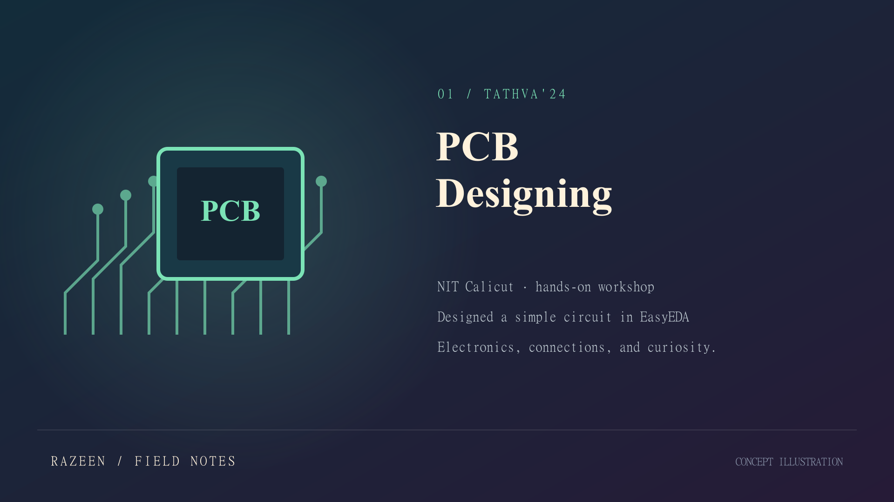
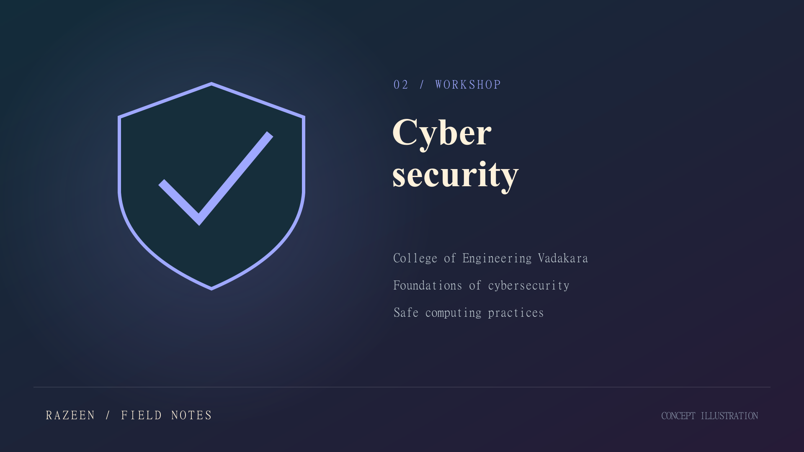
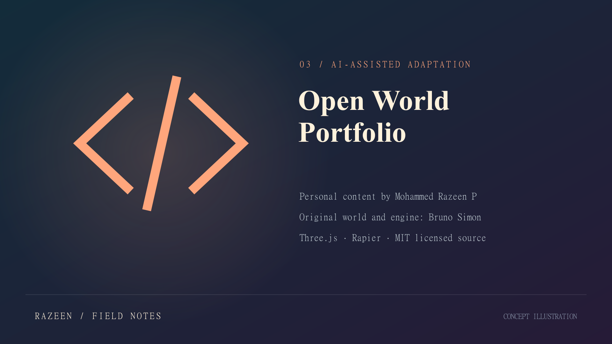

WORKSHOP · TATHVA’24
PCB Designing
NIT Calicut. Guided hands-on work with EasyEDA to design a simple circuit from scratch and explore electronics fundamentals.
My LinkedIn profile ↗A LITTLE CURIOUS. ALWAYS LEARNING.
Computer Science student, creative explorer.
I like to vibe code.
I use AI-assisted coding to explore ideas, prototype, and debug. My interests include Java, Python, cybersecurity, photography, and video editing.

NIT Calicut. Guided hands-on work with EasyEDA to design a simple circuit from scratch and explore electronics fundamentals.
My LinkedIn profile ↗
College of Engineering Vadakara. Foundational cybersecurity concepts and safe computing practices.
My LinkedIn profile ↗
An AI-assisted adaptation of Bruno Simon’s MIT-licensed Folio 2025. My content, workshops, and learning journey inside his original interactive world.
View source ↗Workshop cover images are explanatory illustrations, not photographs or screenshots of workshop deliverables.
Programming in Java — Elite + Silver certification.
Sri Shanmugha College of Engineering & Technology, Salem. Anna University. Expected graduation: 2027.
Java, Python, cybersecurity fundamentals, testing basics, AI-assisted coding, photography, and video editing.
CapCut, InShot, VN, and Alight Motion. Languages: English and Malayalam.